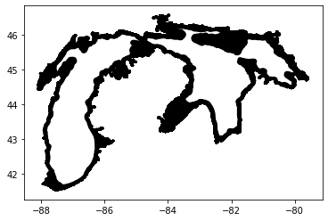

Orthogonalizing a large mesh
This is an example of loading and orthogonalizing a large mesh2d. At the very beginning, the necessary libraries have to be imported. In this example we also use the UGrid library for loading the mesh2d correctly
import matplotlib.pyplot as plt
import numpy as np
import pandas as pd
from meshkernel import (
GeometryList,
MeshKernel,
OrthogonalizationParameters,
ProjectionType,
Mesh2d,
)
from ugrid import UGrid, UGridMesh2D
Define an orthogonality threshold and the file names
orthogonality_criteria = 0.3
input_file = "./Michigan_Huron_ORTHO_mc025_mn5_net.nc"
output_file = "./Michigan_Huron_orthogonality_issues.xyz"
Read the mesh geometry
with UGrid(input_file, "r") as ug:
num_mesh2d_topologies = ug.mesh2d_get_num_topologies()
mesh2d_ugrid = ug.mesh2d_get(num_mesh2d_topologies - 1)
---------------------------------------------------------------------------
UGridError Traceback (most recent call last)
c:\Users\sayed\work\repositories\MeshKernelPy\docs\examples\08_mesh2d_orthogonalization.ipynb Cell 7 line 1
----> <a href='vscode-notebook-cell:/c%3A/Users/sayed/work/repositories/MeshKernelPy/docs/examples/08_mesh2d_orthogonalization.ipynb#X44sZmlsZQ%3D%3D?line=0'>1</a> with UGrid(input_file, "r") as ug:
<a href='vscode-notebook-cell:/c%3A/Users/sayed/work/repositories/MeshKernelPy/docs/examples/08_mesh2d_orthogonalization.ipynb#X44sZmlsZQ%3D%3D?line=1'>2</a> num_mesh2d_topologies = ug.mesh2d_get_num_topologies()
<a href='vscode-notebook-cell:/c%3A/Users/sayed/work/repositories/MeshKernelPy/docs/examples/08_mesh2d_orthogonalization.ipynb#X44sZmlsZQ%3D%3D?line=2'>3</a> mesh2d_ugrid = ug.mesh2d_get(num_mesh2d_topologies - 1)
File c:\Users\sayed\AppData\Local\Programs\Python\Python311\Lib\site-packages\ugrid\ugrid.py:58, in UGrid.__init__(self, file_path, method)
55 raise OSError(f"Unsupported operating system: {system}")
57 self.lib = CDLL(str(lib_path))
---> 58 self.__open(file_path, method)
File c:\Users\sayed\AppData\Local\Programs\Python\Python311\Lib\site-packages\ugrid\ugrid.py:94, in UGrid.__open(self, file_path, method)
91 self._file_id = c_int(-1)
93 file_path_bytes = bytes(file_path, encoding="utf8")
---> 94 self.__execute_function(
95 self.lib.ug_file_open,
96 file_path_bytes,
97 file_mode,
98 byref(self._file_id),
99 )
File c:\Users\sayed\AppData\Local\Programs\Python\Python311\Lib\site-packages\ugrid\ugrid.py:831, in UGrid.__execute_function(self, function, *args)
829 if function(*args) != Status.SUCCESS:
830 error_message = self.__get_error()
--> 831 raise UGridError(error_message)
UGridError: No such file or directory
file: D:\ENGINES\io_netcdf_investigation\UGrid\UGrid\UGrid\extern\netcdf-cxx4\cxx4\ncFile.cpp line:152
Create a meshkernel mesh2d from the nodes and edges
mesh2d_mk = Mesh2d()
mesh2d_mk.node_x = mesh2d_ugrid.node_x
mesh2d_mk.node_y = mesh2d_ugrid.node_y
mesh2d_mk.edge_nodes = mesh2d_ugrid.edge_nodes
Create a meshkernel instance
mk = MeshKernel(ProjectionType.SPHERICAL)
Set the mesh (expensive call)
mk.mesh2d_set(mesh2d_mk)
Get the mesh
mesh2d_output = mk.mesh2d_get()
fig, ax = plt.subplots()
mesh2d_output.plot_edges(ax, color="black")

Inquire orthogonality (expensive call)
orthogonality = mk.mesh2d_get_orthogonality().values
Extract edges with orthogonality value above the orthogonality_criteria
criteria_indices = np.where(orthogonality > orthogonality_criteria)[0]
Save the extracted edges to file
xyz_df = pd.DataFrame([])
xyz_df["edge_x"] = mesh2d_output.edge_x[criteria_indices]
xyz_df["edge_y"] = mesh2d_output.edge_y[criteria_indices]
xyz_df["orthogonality"] = orthogonality[criteria_indices]
xyz_df.to_csv(output_file, index=False, header=False, sep=" ")
Orthogonalizing
selecting_polygon = GeometryList(
np.empty(0, dtype=np.double), np.empty(0, dtype=np.double)
)
land_boundaries = GeometryList(
np.empty(0, dtype=np.double), np.empty(0, dtype=np.double)
)
mk.mesh2d_compute_orthogonalization(
project_to_land_boundary_option=0,
orthogonalization_parameters=OrthogonalizationParameters(outer_iterations=1),
selecting_polygon=selecting_polygon,
land_boundaries=land_boundaries,
)
mesh2d_output = mk.mesh2d_get()
fig, ax = plt.subplots()
mesh2d_output.plot_edges(ax, color="black")